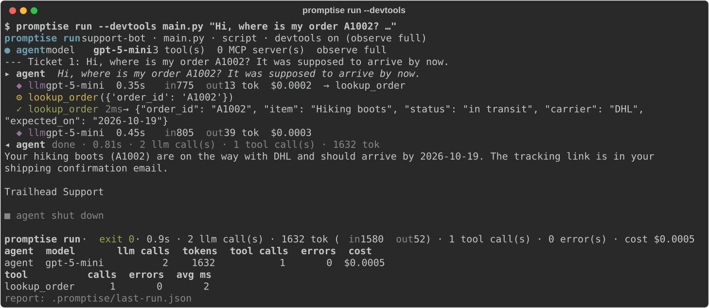
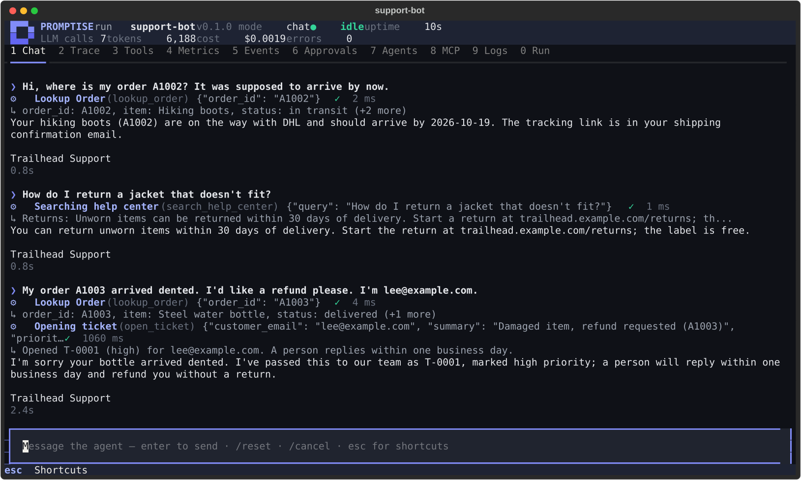
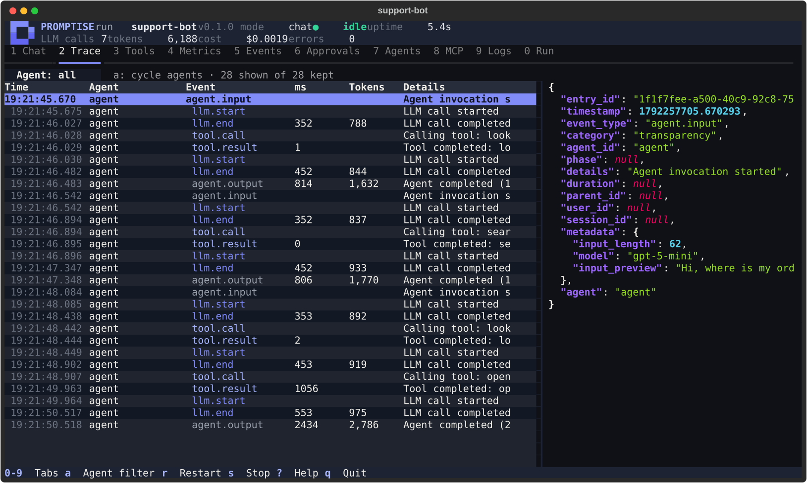
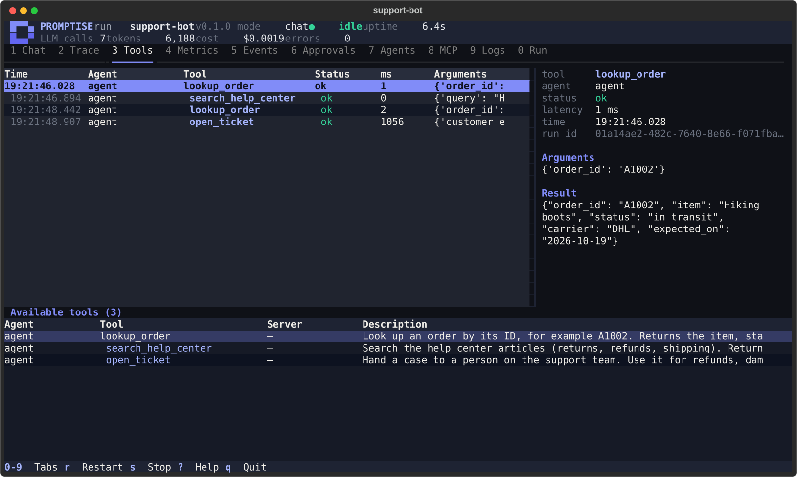
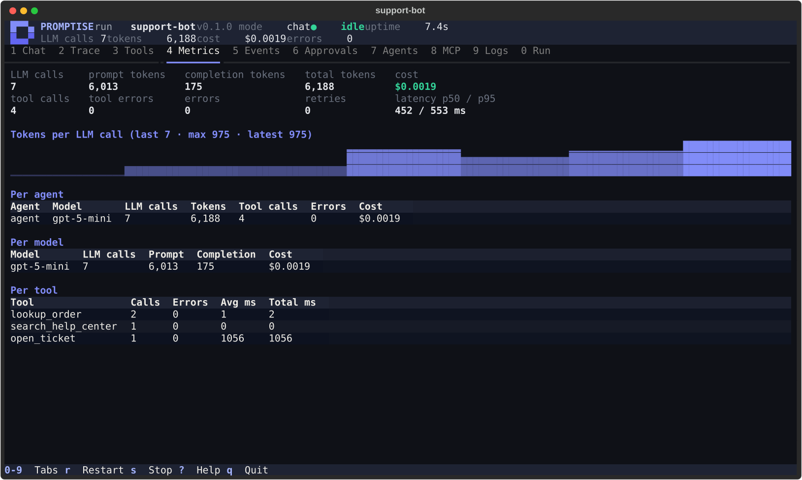
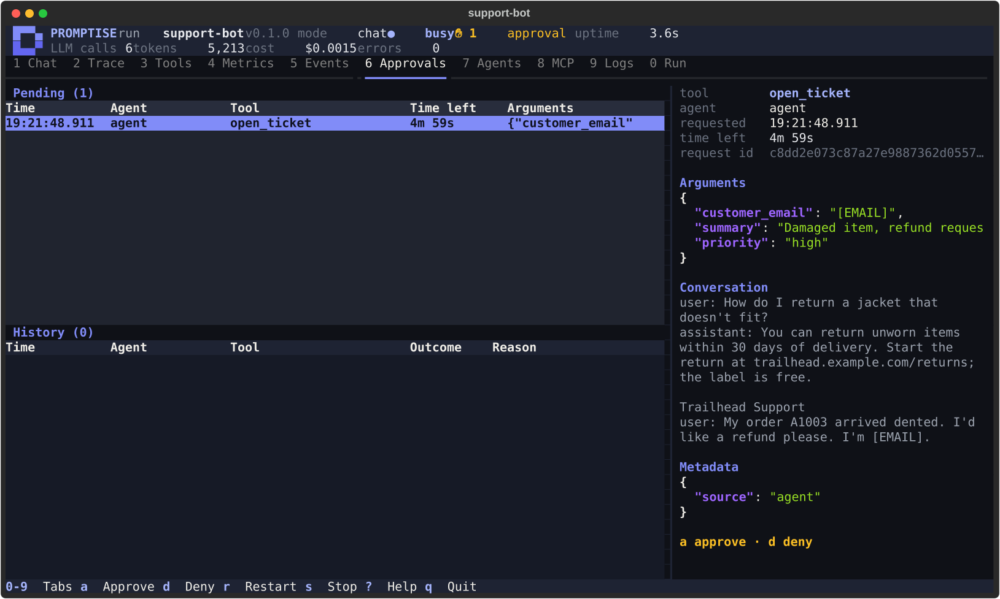
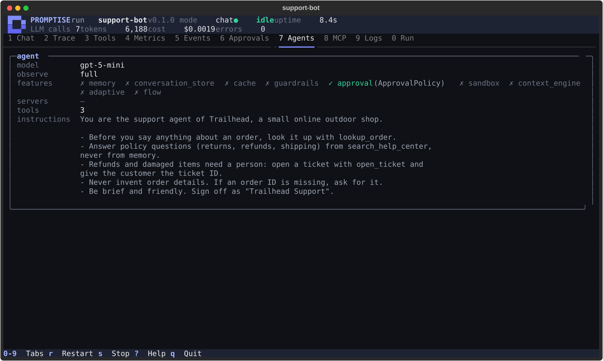
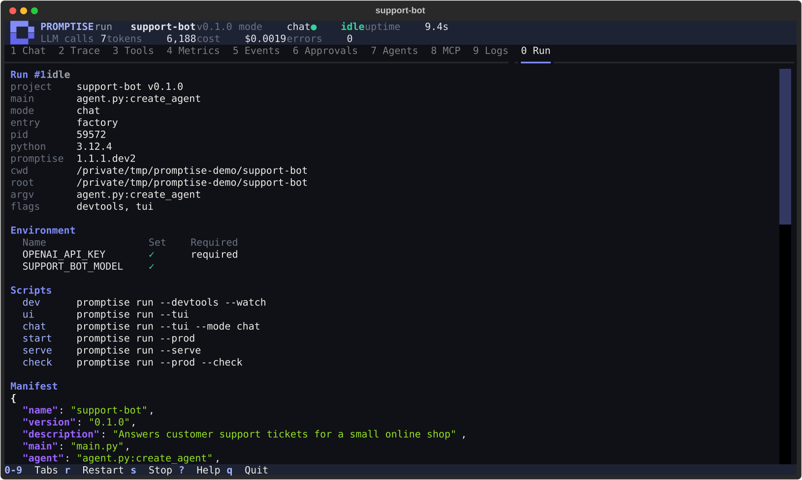

Projects & promptise run¶
A Promptise project works like a Node project. promptise.toml plays the part of package.json: it names the program (main), lists named commands ([scripts]), and says which environment variables the project needs ([env]). promptise run runs your program the way node or npm start would.
Your program stays a normal Python program. Flags add dev tools, a terminal UI, file watching, production behavior or an HTTP API, and with them every agent the program builds is instrumented, with no changes to your code.
promptise init --project my-bot # create a project
cd my-bot
cp .env.example .env # then set OPENAI_API_KEY in .env
promptise run # run main.py, like `python main.py`
promptise run --devtools # live traces, tool calls, tokens and cost
promptise run --tui # the full terminal UI
promptise run --serve # an HTTP API for the agent
promptise run --prod # JSON logs, preflight checks, graceful SIGTERM
A complete example project is in examples/run/support_bot/.
How it maps to npm¶
| Node / npm | Promptise |
|---|---|
package.json |
promptise.toml, or [tool.promptise] in pyproject.toml |
"main": "index.js" |
main = "main.py" |
"scripts": {...} |
[scripts] |
node index.js |
python main.py |
npm start |
promptise run (or promptise run start, if you define a start script) |
npm run dev |
promptise run dev |
npm run (lists scripts) |
promptise run --list |
npm init |
promptise init --project |
nodemon |
promptise run --watch |
The manifest describes how to run the project. The agent itself stays in your Python code.
Create a project¶
| Option | Meaning |
|---|---|
DIR |
Where to create the project (default: the current directory). Created if missing. |
--name NAME |
The project name (default: the directory's name). |
--model MODEL |
The model string the agent uses (default: openai:gpt-5-mini). It also decides which API key [env] required lists: anthropic:... gives ANTHROPIC_API_KEY, a local ollama:... needs none, and a string without a known provider prefix gives OPENAI_API_KEY. |
--force |
Overwrite files that already exist. |
It writes:
| File | Contents |
|---|---|
promptise.toml |
name, version = "0.1.0", description, main = "main.py", agent = "agent.py:create_agent", the scripts dev, ui, start, serve and check, [env] required, and a commented-out [pricing] example |
agent.py |
create_agent, the agent factory, with one local tool (add) |
main.py |
A normal script: builds the agent, asks the question from its arguments (or a default one), prints the answer and shuts the agent down |
.env.example |
The variables the model's provider needs |
README.md |
How to run the project |
.gitignore |
.env, .promptise/ and __pycache__/, added to an existing file without duplicating lines |
promptise init --project never overwrites a file without --force. When files exist, it lists every one of them and writes nothing. It never touches the network.
promptise init without --project still writes a .superagent template, as before. See the CLI reference.
A project, file by file¶
This is what promptise init --project creates (comments shortened).
promptise.toml:
name = "my-bot"
version = "0.1.0"
description = "An agent built with Promptise"
main = "main.py" # the program `promptise run` runs
agent = "agent.py:create_agent" # the agent factory for --serve, -i and chat mode
[scripts]
dev = "promptise run --devtools --watch"
ui = "promptise run --tui"
start = "promptise run --prod"
serve = "promptise run --serve"
check = "promptise run --prod --check"
[env]
files = [".env"]
required = ["OPENAI_API_KEY"]
agent.py, the agent factory:
from __future__ import annotations
from langchain_core.tools import tool
from promptise import PromptiseAgent, build_agent
from promptise.run import RunContext
MODEL = "openai:gpt-5-mini"
@tool
def add(a: float, b: float) -> float:
"""Add two numbers and return the sum."""
return a + b
async def create_agent(ctx: RunContext | None = None) -> PromptiseAgent:
model = (ctx.model if ctx is not None else None) or MODEL
return await build_agent(
model=model,
instructions="You are a helpful assistant. Use the add tool for arithmetic.",
extra_tools=[add],
)
main.py, the program:
from __future__ import annotations
import asyncio
import sys
from agent import create_agent
async def main() -> None:
question = " ".join(sys.argv[1:]) or "What is 1234 + 5678?"
agent = await create_agent()
messages = [{"role": "user", "content": question}]
try:
result = await agent.ainvoke({"messages": messages})
print(result["messages"][-1].content)
finally:
await agent.shutdown()
if __name__ == "__main__":
asyncio.run(main())
python main.py and promptise run run the same program. With promptise run, the project's .env and [env] settings are applied, and the agent shows up in the dev tools and the terminal UI.
The manifest¶
Where promptise run finds it¶
promptise run looks in the current directory, then in each parent directory. It stops at the first directory that has a promptise.toml, or a pyproject.toml with a [tool.promptise] table. In the same directory, promptise.toml wins. The search also stops at the repository root (the first directory that holds .git), so a manifest above your repository is never used.
-f PATH / --manifest PATH names the manifest explicitly.
The project root is the manifest's directory. Relative paths in the manifest are relative to it.
Without a manifest, promptise run some_file.py still works: the root is the current directory and every setting has its default.
A manifest decides what runs, so promptise run only uses one found this way if it is a regular file owned by you that other users cannot write (the same rule as for .env files). A promptise.toml planted in a shared directory such as /tmp is refused with an error. -f/--manifest uses the file you name.
A full example¶
name = "support-bot"
version = "0.1.0"
description = "Answers support tickets"
main = "main.py"
agent = "agent.py:create_agent"
python_path = ["."]
[scripts]
dev = "promptise run --devtools --watch"
ui = "promptise run --tui"
start = "promptise run --prod"
eval = "python evals/run.py"
[env]
files = [".env"]
required = ["OPENAI_API_KEY"]
vars = { LOG_LEVEL = "info" }
[dev]
observe = "full"
watch = ["."]
ignore = ["data/*"]
report = ".promptise/last-run.json"
[prod]
log_format = "json"
log_level = "INFO"
observe = "off"
shutdown_timeout = 30
[serve]
host = "127.0.0.1"
port = 8080
auth_token_env = "PROMPTISE_SERVE_TOKEN"
max_concurrency = 8
[pricing]
"gpt-5-mini*" = { input = 0.25, output = 2.0 }
Every key is optional. An empty promptise.toml is a valid manifest.
Top-level keys¶
| Key | Type | Default | Meaning |
|---|---|---|---|
name |
string | the root directory's name | The project name, shown in the dev tools, the TUI and /v1/info. |
version |
string | none | The project version. |
description |
string | none | A one-line description. |
main |
string | the first existing of main.py, agent.py, app.py |
The program promptise run runs, relative to the root. |
agent |
string | none | An agent factory for the chat, once and serve modes: file.py:function or package.module:function. |
python_path |
list of strings | ["."] |
Directories added to sys.path, relative to the root. |
[scripts]¶
A table of named commands, like npm scripts. Each key is a script name and each value is a command line. A name may not be empty, start with - or contain spaces, and a command may not be empty. See Scripts.
[env]¶
| Key | Type | Default | Meaning |
|---|---|---|---|
files |
list of strings | [".env"] |
.env-style files to load, in order, relative to the root. A missing file is skipped. |
required |
list of strings | [] |
Variables that must be set before the program starts. Every missing one is reported at once. |
vars |
table of strings | {} |
Default values, set only when the variable is not set already. |
See Environment variables for the loading rules.
[dev]¶
Applies with --devtools, --tui and --watch.
| Key | Type | Default | Meaning |
|---|---|---|---|
observe |
basic, standard or full |
full |
How much is recorded for agents that set no observe of their own. --observe LEVEL overrides it. |
watch |
list of strings | ["."] |
Paths --watch watches, relative to the root. |
ignore |
list of strings | [] |
Extra glob patterns --watch ignores. .git, __pycache__, .venv, venv, node_modules, .promptise, .mypy_cache, .pytest_cache and .ruff_cache are always ignored. |
report |
string | "" |
Write a JSON run report to this path (relative to the project root) when the run ends. Empty means no report. --report PATH overrides it; that path is relative to the directory you run the command from. |
[prod]¶
Applies with --prod.
| Key | Type | Default | Meaning |
|---|---|---|---|
log_format |
json or text |
json |
json writes one JSON object per log line on stderr. |
log_level |
DEBUG, INFO, WARNING, ERROR or CRITICAL |
INFO |
The root log level (case does not matter). |
observe |
off, basic, standard or full |
off |
Record agent activity at this level for agents that set no observe of their own. Each timeline event becomes a JSON log line. |
shutdown_timeout |
number (seconds) | 30 |
How long in-flight work may take to finish after SIGTERM. |
[serve]¶
Applies with --serve. The serve mode needs an agent factory (agent, or a file.py:factory target).
| Key | Type | Default | Meaning |
|---|---|---|---|
host |
string | 127.0.0.1 |
The address to listen on. --host overrides it. |
port |
integer, 0 to 65535 | 8080 |
The port. --port / -p overrides it. |
auth_token_env |
string | PROMPTISE_SERVE_TOKEN |
The environment variable that holds the bearer token clients must send. A token is required when host is not a loopback address. |
max_concurrency |
integer, 1 or more | 8 |
Requests answered at the same time. More get 429. |
[pricing]¶
Prices for the cost estimates in the dev tools, the TUI and the run report, in USD per one million tokens. Keys are model names, and fnmatch globs are allowed:
[pricing]
"gpt-5-mini*" = { input = 0.25, output = 2.0 }
"claude-sonnet-4-5" = { input = 3.0, output = 15.0 }
A model matches by its exact name first, then by its name without the provider: prefix, then against each glob in table order. Both input and output are required and must be 0 or more.
Promptise has no built-in price list. Prices change, and a wrong number is worse than none. A model without a price shows — instead of a cost and is listed as unpriced. The numbers above are examples: check your provider's current prices.
In pyproject.toml¶
Put the same keys under [tool.promptise], and the sub-tables under [tool.promptise.<name>]:
[tool.promptise]
name = "support-bot"
main = "main.py"
agent = "support_bot.agent:create_agent"
[tool.promptise.scripts]
dev = "promptise run --devtools --watch"
[tool.promptise.env]
required = ["OPENAI_API_KEY"]
Mistakes are errors¶
An unknown key is an error, so a typo does not go unnoticed. The message names the file and the dotted path of every problem:
/work/support-bot/promptise.toml:
- dev.obsrve: unknown key (check the spelling)
- serve.port: Input should be less than or equal to 65535
In pyproject.toml, the paths start with tool.promptise.. promptise run exits with code 2 on a manifest error.
main and the agent factory¶
A project can name two things: a program (main) and an agent factory (agent).
mainis your program. It does whatever your application does: answer a batch of tickets, run a pipeline, start a bot.promptise runruns it likepython main.py.agentis a function that builds and returns one agent.promptise runuses it when it drives the agent: the interactive chat, a one-shot question (-i) and the HTTP API (--serve).
Most projects have both: main.py imports the factory from agent.py, so the program and the HTTP API use the same agent.
main: your program¶
promptise run runs main as a complete program, with the same semantics as python main.py:
- It runs as
__main__, soif __name__ == "__main__":blocks run. sys.argvis[main, *ARGS]: the arguments after the target.sys.path[0]is the main file's directory, followed by the root and thepython_pathentries.- The working directory is the project root when a manifest was found. The directory you ran
promptise runfrom is inPROMPTISE_INIT_CWD. sys.exit(code)sets the exit code. Ctrl+C gives 130. An uncaught exception gives 1 (with a readable traceback in dev mode).
Every agent the program builds with build_agent() is instrumented: it appears in the dev tools, the TUI and the run report. See What promptise run adds.
The agent factory¶
A factory is a function that returns a PromptiseAgent. It may be sync or async, and it takes either no argument or a RunContext:
from promptise import PromptiseAgent, build_agent
from promptise.run import RunContext
async def create_agent(ctx: RunContext) -> PromptiseAgent:
return await build_agent(model=ctx.model or "openai:gpt-5-mini", instructions="...")
A factory that also runs outside promptise run (called from main.py, say) can make the context optional: async def create_agent(ctx: RunContext | None = None). promptise run still passes the context.
The factory must build the agent when it is called. If the name points to an agent that was already built when the module was imported, promptise run refuses it with a message that says so, because it must build the agent inside its own event loop. promptise run calls await agent.shutdown() when the run ends.
RunContext is a frozen dataclass in promptise.run:
| Field | Type | Meaning |
|---|---|---|
project |
str |
The project name. |
root |
Path |
The project root. |
mode |
"script", "chat", "once" or "serve" |
The mode of this run. |
devtools |
bool |
--devtools (or --tui) is on. |
prod |
bool |
--prod is on. |
tui |
bool |
The run is shown in the terminal UI. |
model |
str or None |
The --model override. promptise run applies it to every agent anyway, so a factory only needs it to pick a model-specific setting. |
manifest |
ProjectManifest or None |
The parsed manifest. |
args |
tuple[str, ...] |
The arguments after the target. |
Targets and modes¶
TARGET is one of these, checked in this order:
- Omitted: the manifest's
main. - A name in
[scripts]: run that script. See Scripts. - A
.pyfile: run that file instead ofmain, with the manifest's settings. file.py:factoryorpackage.module:factory: use that agent factory.
ARGS become the program's sys.argv[1:]. To pass arguments to main, name the file:
Put -- before arguments that look like promptise run options, so they reach your program unchanged: promptise run main.py -- --verbose.
Modes¶
| Mode | What runs | Use it for |
|---|---|---|
script |
The program, as __main__ |
Running your application |
chat |
The factory's agent, in an interactive chat in the terminal | Trying the agent by hand |
once |
The factory's agent, for one question; the answer is printed and the process exits | Shell scripts, CI checks |
serve |
The factory's agent, behind an HTTP API | Other services calling the agent |
--mode auto (the default) picks the mode:
- An explicit
:factorytarget,--serveor-igives an agent mode (chat,serveoronce). - Otherwise, if the main file has an
if __name__ == "__main__":block, or top-level statements other than imports, definitions and assignments (asyncio.run(main())), it runs as a script. - Otherwise, if it defines
create_agent, it opens the chat. - Otherwise it runs as a script.
Set the mode yourself with --mode script|chat|once|serve. --serve is short for --mode serve, and -i TEXT / --input TEXT is short for --mode once with that question.
Chat mode¶
promptise run --mode chat # the manifest's agent factory
promptise run agent.py:create_agent # a factory named on the command line
The answer streams as it is written, and tool calls appear inline. Commands:
| Command | What it does |
|---|---|
/help |
List the commands |
/stats |
Tokens, cost and tool calls so far |
/tools |
The agent's tools |
/reset |
Start a new conversation |
/exit |
Quit (also Ctrl+D) |
Once mode¶
promptise run -i "Where is my order A1002?"
echo "Where is my order A1002?" | promptise run -i - # read the question from stdin
promptise run -i "Where is my order A1002?" --json # the answer and stats as JSON
What promptise run adds to your agents¶
A plain promptise run of a script adds nothing to your agents: the program runs exactly as with python main.py, plus the project's environment, at no extra cost.
With --devtools, --tui, --model, --observe, --report or [prod] observe, and in the chat, once and serve modes, promptise run installs a harness before your program starts. build_agent() asks it for settings and reports every agent it builds. With the harness, promptise run:
- turns on observability, at the run's level, for agents that set no
observeof their own, without writing report files; - gives each agent an id (
agent,agent-2, ...) when it has none; - adds a sink for agent events, creating an
EventNotifierwhen the agent has none; - replaces every agent's model with the
--modeloverride, when you give one; - reports each agent's model, tools, MCP servers and features to the dev tools and the TUI.
Your values always win. An agent built with observe=False stays unobserved. One with its own observe config keeps it, and its own events notifier keeps working, with the run's sink added to it.
Outside promptise run, nothing changes: python main.py builds the same agents with no harness.
Scripts¶
[scripts] holds named commands, like npm scripts:
[scripts]
dev = "promptise run --devtools --watch"
ui = "promptise run --tui"
start = "promptise run --prod"
eval = "python evals/run.py"
lint = "ruff check ."
promptise run dev # promptise run --devtools --watch
promptise run eval smoke # python evals/run.py smoke
promptise run --list # list the scripts
- A script runs through the shell, from the project root. Its exit code is the exit code of
promptise run. - Arguments after the script name are appended to the command. Put
--before arguments that look likepromptise runoptions:promptise run eval -- --limit 10. promptise runoptions given with the script name are passed on when the script is itself apromptisecommand:promptise run dev --model anthropic:claude-sonnet-4-5runspromptise run --devtools --watch --model anthropic:claude-sonnet-4-5. For any other command they are ignored, with a warning.- The directory of the Python that runs
promptisecomes first onPATH, sopython,pytestandpromptisein a script are the ones from the same environment. This works likenode_modules/.binin npm. - The script gets
PROMPTISE_RUN_SCRIPT(its name),PROMPTISE_PROJECT_ROOTandPROMPTISE_INIT_CWD(the directory you ranpromptise runfrom). [env]is applied bypromptise runitself, so a script that runspromptise rungets it. Other commands get the environment you started with.- A script that calls itself through
promptise runstops with an error instead of looping forever. - When the command is echoed, the values of
--env KEY=VALUEare shown as***. - On Windows, scripts run through
cmd.exe, which has no quoting that is safe for every character: an appended argument that contains& | < > ^ % ! "is refused. Run such a command directly.
Environment variables¶
Before the program starts, promptise run sets up its environment:
- Command line.
-e K=V/--env K=V(repeatable) sets a variable for this run. It wins over everything, including a variable already set in your shell. - Files. The
--env-file PATHfiles (repeatable) load first, then the[env] files(default[".env"]), in order. A missing--env-fileis an error; a missing file in[env] filesis skipped. - Defaults.
[env] varsfills in variables that are still not set. - Check. Every variable in
[env] requiredmust be set. If any are missing,promptise runlists all of them and exits with code 2.
The rules:
- A file never overrides. A variable that is already set to a non-empty value is never changed by a file or by
[env] vars, so the first file that sets a variable wins. A variable exported as an empty string (export OPENAI_API_KEY=) counts as not set, so a file's value fills it. - Unsafe files are refused. A file must be a regular file. On Linux and macOS it must be owned by you and not writable by other users. An unsafe or unreadable file is an error that names the file.
PROMPTISE_NO_DOTENV=1turns file loading off. No.env-style file is loaded. Use it in containers and CI, where the environment is set from outside.
The CLI also loads a .env from the current directory (or a parent, up to the project root) before any command runs, under the same rules. See Configuration & Secrets.
promptise run never shows variable values. The TUI and the run report list only whether each variable is set.
Dev tools¶
--devtools prints a live trace of every agent on stderr. Your program's own output stays on stdout, unchanged. The trace shows:
- each agent as it is built: its model and tools;
- every LLM turn: model, latency, tokens, estimated cost and the tools it asked for;
- every tool call, with its arguments and a preview of the result;
- errors and notable agent events (a guardrail block, a slow tool, an approval request).
When the run ends, a summary table lists the totals per agent, per model and per tool: LLM calls, tokens, tool calls, errors, latency and cost.

promptise run --devtools on the support bot example. The trace goes to stderr; the program's answer is its own output.| Setting | Effect |
|---|---|
[dev] observe / --observe LEVEL |
How much is recorded: basic, standard or full (default). |
[dev] report / --report PATH |
Write a JSON run report on exit: every run event that was kept, and the final totals. |
[pricing] |
The prices behind the cost estimates. |
Costs are estimates from your [pricing] table. A model without a price shows —.
Watch mode¶
--watch runs the program in a child process and restarts it when a project file changes, like nodemon. Changes are debounced, so saving several files restarts once. When the program exits on its own, promptise run waits for the next change and runs it again. --watch is for development: it cannot be combined with --prod.
- Watched: the paths in
[dev] watch(default: the whole root). - File types:
.py,.toml,.yaml,.yml,.json,.md,.txt,.env,.j2,.jinja,.agentand.superagent. - Ignored:
.git,__pycache__,.venv,venv,node_modules,.promptise,.mypy_cache,.pytest_cache,.ruff_cache, and the globs in[dev] ignore.
The terminal UI¶
--tui opens a full-screen terminal UI. It records what --devtools records and shows it in tabs. The program runs in a child process, and its output is captured line by line, so nothing it prints draws over the UI.
In script mode, the first tab is a console: it shows the program's output, and a line you type is sent to the program's standard input. In the agent modes (--mode chat, --serve), the first tab is a chat with the agent.

promptise run --tui --mode chat). Tool calls show inline, with their arguments, results and timings.| Key | Tab | Shows |
|---|---|---|
1 |
Console / Chat | The program's output and input, or the chat with the agent (streamed answers, tool calls inline) |
2 |
Trace | Every timeline entry of every agent (LLM calls, tool calls and results, errors, with timings), filterable by agent, with the full entry beside it |
3 |
Tools | Every tool call (arguments, result, latency) and the tools each agent has |
4 |
Metrics | Totals, per agent, model and tool, and the tokens of each LLM call |
5 |
Events | Agent events: invocations, slow tools, guardrails, approvals |
6 |
Approvals | Tool calls waiting for a human decision, and the decisions made |
7 |
Agents | Every agent the program built: model, observability level, tools, MCP servers, features and instructions |
8 |
MCP | The MCP servers the agents use, with their transport and tools |
9 |
Logs | Python log records and the program's stderr, filterable by level |
0 |
Run | The project, the entry, the mode and flags, the manifest, the environment variables (set or missing, never their values), the scripts, HTTP requests in serve mode, and the run's state and exit code |
| Key | Action |
|---|---|
0 to 9 |
Switch tabs (when the input box does not have focus) |
esc |
Leave the input box |
r |
Restart the program |
s |
Stop the program |
a / d |
Approvals tab: approve or deny the selected request (deny asks for an optional reason) |
a |
Trace tab: filter by agent |
l |
Logs tab: filter by level |
? |
Help |
q, Ctrl+C |
Quit |




a approves, d denies. Personal data in the arguments is redacted.

The Approvals tab answers requests from agents whose approval policy uses a QueueApprovalHandler. Other handlers (webhooks, callbacks) already have someone answering them and are left alone. See Approval (HITL).
Add --watch (promptise run --tui --watch) and the program restarts in the UI whenever a watched file changes; the run history stays, and each run is numbered.
--tui needs an interactive terminal. It cannot be combined with --prod.
Production¶
promptise run --prod # or `promptise run start` in a new project
promptise run --prod --check # check the project, then exit
--prod is for running the project unattended, in a container or under a process manager.
- JSON logs on stderr. Every log record becomes one JSON object per line:
ts,level,logger,msg, and any extra fields (excfor a traceback). Stdout stays your program's output. Set[prod] log_format = "text"for plain lines and[prod] log_levelfor the level. - Run events in the logs. The start and the end of the run are written as JSON log lines (
"logger": "promptise.run.events"). When agents are instrumented (in serve mode, or with[prod] observeset), so are every agent built and closed, every HTTP request, and the final totals. With[prod] observe, every timeline event (LLM calls, tool calls, errors) is written too. - Checks before the start. See Preflight checks. Under
--prod, the problems are written as one JSON log line ("msg": "preflight failed","problems": [...]). - Graceful SIGTERM. On SIGTERM, a script shuts down the way it does on Ctrl+C: it sees
KeyboardInterrupt,asyncio.runcancels its main task,finallyblocks run and agents shut down. The exit code is 143. In serve mode the server drains instead (see Limits and shutdown) and exits with 0. A second SIGTERM exits at once.
--prod cannot be combined with --tui or --watch.
Preflight checks¶
Every promptise run checks the project before it starts the program, and lists every problem it found instead of failing on the first one at runtime:
- the manifest is valid;
- every
-e K=Vis well formed, every--env-fileexists, and every env file can be read and is safe to load; - every variable in
[env] requiredis set; - the entry exists: the
mainfile, or the agent factory for the agent modes.
If anything is wrong, it exits with code 2 and starts nothing.
--check runs the same checks and also checks the entry itself: a script must compile, and a factory's module must import and define the factory. Then it exits: 0 when the project is ready, 2 when it is not. Importing a factory module runs its module-level code; a script is only compiled, never run.
Exit codes¶
| Code | Meaning |
|---|---|
0 |
The program finished, or the server shut down cleanly |
1 |
A runtime error: an uncaught exception, a factory that failed to build the agent, a port that is in use |
2 |
A configuration or usage error: an invalid manifest, a missing variable, an unknown target, a failed check, a public host without a token |
130 |
Interrupted with Ctrl+C |
143 |
Stopped by SIGTERM (script mode, with --prod) |
In script mode, sys.exit(code) in your program sets the code.
Serve mode¶
promptise run --serve # 127.0.0.1:8080, from [serve]
promptise run --serve --port 9000
promptise run --prod --serve --host 0.0.0.0 # in a container (needs a token)
--serve builds the agent from the factory and answers HTTP requests. One agent serves every request.
| Method and path | Auth | Response |
|---|---|---|
GET /healthz |
none | 200 {"status": "ok"} while the process runs (liveness) |
GET /readyz |
none | 200 {"status": "ready"} once the agent is built; 503 before that (not_ready) and while shutting down (draining) (readiness) |
GET /v1/info |
bearer | The project (name, version, model, ...) and the agent's tool names |
POST /v1/invoke |
bearer | Runs the agent: {"output", "duration_ms", "usage", "request_id"} |
POST /v1/stream |
bearer | Runs the agent and streams Server-Sent Events, one data: <JSON> line per event |
The request body of /v1/invoke and /v1/stream is a JSON object:
| Field | Type | Meaning |
|---|---|---|
input |
string, or a list of messages | The question, or the conversation as [{"role": "user", "content": "..."}] |
session_id |
string, optional | 1 to 256 letters, digits, ., _, : or - |
With a string input and a session_id, an agent built with a conversation_store loads and saves the conversation of that session, so the client sends only the new message. Otherwise nothing is stored: with a list of messages, the client owns the history. See Conversations.
curl -s localhost:8080/healthz
curl -s localhost:8080/v1/info
curl -s localhost:8080/v1/invoke \
-H 'content-type: application/json' \
-d '{"input": "Where is my order A1002?"}'
{
"output": "Your order A1002 is in transit with DHL and should arrive on 2026-10-19.",
"duration_ms": 2140.5,
"usage": {"llm_calls": 2, "prompt_tokens": 1630, "completion_tokens": 58, "total_tokens": 1688},
"request_id": "6f1d0c9e2a7b4c1e"
}
usage counts the tokens of every model call the request made, as the model reported them (zeros when it reports none).
curl -N localhost:8080/v1/stream \
-H 'content-type: application/json' \
-d '{"input": "Where is my order A1002?"}'
Each streamed event is a streaming event as JSON. Its type is token, tool_start or tool_end, and the stream ends with done (which also carries usage) or error:
data: {"type": "tool_start", "tool_name": "lookup_order", "arguments": {"order_id": "A1002"}, ...}
data: {"type": "tool_end", "tool_name": "lookup_order", "success": true, "duration_ms": 3.1, ...}
data: {"type": "token", "text": "Your order", ...}
data: {"type": "done", "full_response": "Your order A1002 is in transit ...", "usage": {...}, ...}
A streamed request with a stored session (session_id on an agent with a conversation_store) sends the whole answer as one token event, then done.
Every response has an X-Request-ID header: the one the client sent, when it is well formed, or a new one.
Authentication¶
When the variable named by [serve] auth_token_env (default PROMPTISE_SERVE_TOKEN) is set, every /v1/* request must send it as a bearer token, or it gets 401. /healthz and /readyz never need one, so probes work without it. Use a long random token: a token shorter than 16 characters logs a warning.
export PROMPTISE_SERVE_TOKEN="$(openssl rand -hex 32)"
promptise run --serve
curl -s localhost:8080/v1/invoke \
-H "Authorization: Bearer $PROMPTISE_SERVE_TOKEN" \
-H 'content-type: application/json' \
-d '{"input": "Where is my order A1002?"}'
On a host that is not a loopback address (--host 0.0.0.0, say), promptise run refuses to start without a token (exit code 2).
Without a token, on a loopback address, /v1/* refuses a request whose Host header is not a loopback name (421) or that carries a cross-site Origin (403). A web page open in your browser cannot drive the agent.
Errors¶
Errors are JSON: {"error": "<message>"}.
| Status | When |
|---|---|
400 |
The body is not a JSON object, has unknown fields, or has an invalid input or session_id |
401 |
A token is set and the request has no valid bearer token |
403, 421 |
No token is set and the request comes from a browser page or a non-loopback Host |
429 |
{"error": "busy"}: max_concurrency requests are already running (with Retry-After) |
500 |
{"error": "internal error", "error_id": "..."}: the agent failed. The exception is logged with the same error_id, never sent to the client |
503 |
{"error": "draining"}: the server is shutting down |
Limits and shutdown¶
- At most
[serve] max_concurrencyrequests (default 8) run at the same time. A request beyond that gets429at once. - On SIGTERM (or Ctrl+C) the server drains:
/readyzand new/v1/*requests answer503, and requests already running get up to[prod] shutdown_timeoutseconds to finish. Then the process exits with 0.
The API serves one agent for one application. To give each of your users their own identity, conversations and permissions, embed the agent in your own web server instead.
Deploy with Docker¶
FROM python:3.12-slim
WORKDIR /app
RUN pip install --no-cache-dir promptise
COPY . .
# The environment comes from the container, not from a .env file.
ENV PROMPTISE_NO_DOTENV=1
EXPOSE 8080
CMD ["promptise", "run", "--prod", "--serve", "--host", "0.0.0.0"]
Pass the API key and the serve token as environment variables, not in the image:
docker build -t support-bot .
docker run -p 8080:8080 \
-e OPENAI_API_KEY \
-e PROMPTISE_SERVE_TOKEN \
support-bot
Because the host is 0.0.0.0, the container refuses to start without PROMPTISE_SERVE_TOKEN. Point the liveness probe at /healthz and the readiness probe at /readyz. The container stops gracefully on SIGTERM, which is what docker stop and Kubernetes send.
Add a .dockerignore with .env so your local secrets never end up in the image. To check a project before you deploy it, run promptise run --prod --check in CI with the same environment variables.
Migrating from promptise run --model-id¶
The inline REPL still works unchanged:
--model-id, --stdio, --http, --instructions, --trace/--no-trace and --raw/--no-raw select it, exactly as in 1.3. You do not need to change anything.
To move the same setup into a project, put the servers in a factory:
from promptise import PromptiseAgent, build_agent
from promptise.config import HTTPServerSpec
from promptise.run import RunContext
async def create_agent(ctx: RunContext) -> PromptiseAgent:
return await build_agent(
model=ctx.model or "openai:gpt-5-mini",
servers={"tools": HTTPServerSpec(url="http://localhost:8000/mcp")},
)
| Before | After |
|---|---|
promptise run --model-id M --http "..." |
promptise run agent.py:create_agent (chat mode), or promptise run --mode chat with agent = "agent.py:create_agent" in the manifest |
--model-id M |
--model M (overrides the model of every agent) |
--instructions "..." |
instructions= in build_agent() |
--trace |
--devtools |
Flag reference¶
| Flag | Meaning |
|---|---|
TARGET |
A script name, a .py file, file.py:factory or package.module:factory (default: main) |
ARGS |
Arguments for the program (sys.argv[1:]) or appended to a script; -- ends the options |
-d, --devtools |
Dev tools: live trace on stderr and a summary at the end |
-t, -tui, --tui |
The terminal UI |
-w, --watch |
Restart on file changes |
--prod |
Production behavior; not with --tui or --watch |
--check |
Check the project and the entry, then exit 0 (ready) or 2 |
--mode MODE |
auto (default), script, chat, once or serve |
--serve |
Short for --mode serve |
-i TEXT, --input TEXT |
Ask one question (once mode); - reads it from stdin |
--json |
Once mode: print the answer and stats as JSON |
--host HOST |
Serve mode: the address (overrides [serve] host) |
-p PORT, --port PORT |
Serve mode: the port (overrides [serve] port) |
--env-file PATH |
Load this .env-style file before the [env] files (repeatable) |
-e K=V, --env K=V |
Set a variable for this run, overriding the environment (repeatable) |
--model MODEL |
Use this model for every agent |
--observe LEVEL |
Override [dev] observe or [prod] observe |
--report PATH |
Write a JSON run report on exit |
--list |
List the scripts |
-f PATH, --manifest PATH |
Use this manifest |
What's next¶
- CLI reference: every
promptisecommand - Observability: what the recorded timeline holds
- Streaming: the events
/v1/streamsends - Events & Notifications: agent events and sinks